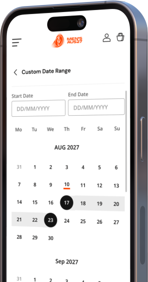
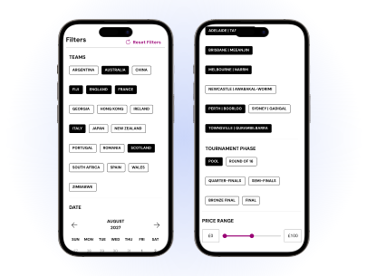
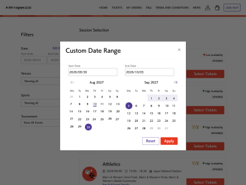
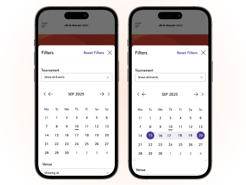

Redesigned Ticket Discovery Filters Into a Scalable Multi-Tournament System
What started as a tournament-specific requirement became a scalable filtering system, establishing a responsive architecture that improved consistency, accessibility, and long-term reuse across future events and client deployments.

Context & Stakes
What was broken, and why it mattered
Filters were one of the highest-leverage interaction points in the ticket discovery experience, directly influencing how quickly fans could narrow large inventories during high-traffic tournament launches.
However, the existing implementation had diverged across tournaments over time, resulting in inconsistent interaction patterns, duplicated implementation effort, and accessibility gaps — especially on mobile devices where the majority of browsing sessions occurred.
01 · Mobile interactions were optimised poorly for dense ticket inventories
Desktop filtering behaviours had been compressed into smaller screens rather than intentionally redesigned for mobile-first usage, creating friction during high-pressure browsing flows.
02 · Accessibility behaviours were inconsistent and difficult to scale
Focus management, keyboard support, semantic hierarchy, and touch target behaviour varied across implementations, increasing both usability and compliance risk.
Old filter implementation
03 · Tournament implementations had fragmented over time
Different tournaments solved filtering independently, leading to duplicated design and engineering effort across launches.
04 · The system lacked a scalable responsive interaction model
The experience behaved differently across breakpoints without a unified behavioural framework for responsive adaptation.
The Challenge
The challenge was not simply redesigning a UI component, but defining a reusable interaction model that could balance responsiveness, accessibility, scalability, and implementation feasibility across a shared platform ecosystem.
Constraints
What shaped the design
The principles defined the direction. These constraints defined the boundaries.
Tournament delivery timelines
The redesign needed to ship within an active Rugby World Cup delivery cycle with limited opportunity for large architectural changes.
Existing platform and Storybook limitations
Solutions needed to work within existing component infrastructure and implementation realities.
Cross-tournament scalability requirements
The design needed to support multiple tournament configurations without fragmenting the experience further.
Accessibility expectations across responsive breakpoints
Interaction behavior needed to remain accessible and predictable across both desktop and mobile contexts.
Users & Context
Who We Were Designing For
The challenge wasn't designing for a single user—it was designing for multiple decision-making models within the same experience. Each audience arrived with different goals, behaviours, and levels of urgency, making adaptability a core requirement rather than an enhancement.
Returning Fan
Efficiency-first, friction-intolerant
Already knows the tournament, the teams, and roughly what they want. They arrive to confirm availability and complete a purchase — not to browse. For this user, filters are the critical path. Every redundant tap, unclear state, or lost filter selection is a signal that the platform isn't worth trusting with a high-value purchase.
Dedicated Fan
High-frequency, architecture stress-tester
Emotionally invested, highly specific, and willing to iterate rapidly across filter combinations to find exactly the right match, seat category, or price tier. This user exposes every performance and responsiveness gap — repeated filter adjustments during high-demand launch windows are exactly the condition under which a poorly architected system degrades. Designing for this user meant designing for the system at load, not at rest.
Casual Explorer
Discovery-first, easily lost
Browsing across 26+ sports and hundreds of sessions with no fixed intent creates a specific kind of cognitive pressure — too many choices with no natural entry point. For this user, a cluttered or dense filter pattern doesn't just cause friction, it causes exit. The filter system needed to reduce the decision surface progressively, surfacing relevance without demanding that the user already know what they're looking for.
International Buyer
Unfamiliar ecosystem, highest cognitive load
Purchasing tickets across unfamiliar venues, tournament structures, and cultural contexts — often on mobile, often without the prior knowledge that makes filter labels intuitive. For this user, any inconsistency in interaction behavior reads as platform unreliability. Predictability wasn't a nice-to-have — it was the only way this user could trust the system enough to complete a purchase.
Discovery & Research
Iterating Toward a Scalable Filtering Architecture
To define a scalable filtering experience across desktop and mobile, I explored multiple interaction models and evaluated them against accessibility requirements, responsive behaviour, implementation feasibility, and browsing efficiency during high-density ticket discovery flows. The goal was not simply to redesign filters visually, but to establish a reusable interaction framework that could scale consistently across future tournaments and devices.
1. Side Slider
Breaks cognitive loadMeeting the 44px minimum touch target requirement increased the height of each filter row, which significantly extended the overall filter panel. As a result, users needed to scroll through more filter options before reaching the controls they needed. For fans making time-sensitive purchase decisions, maintaining context and moving efficiently through the experience is critical. This highlighted an opportunity to balance accessibility requirements with a more streamlined navigation experience.
2. Bottom Slider
System-Level AccessibilityThe decision was guided by implementation quality rather than feature scope. The pattern required additional accessibility validation to ensure a consistent experience across devices and assistive technologies, making a more mature and thoroughly validated approach the stronger long-term choice.
3. Embed Filters
breaks all principlesEmbedding filters directly within the listing meant both filtering controls and listing content shared the same vertical space. Accommodating 44px tap targets within that layout introduced constraints that reduced the effectiveness of each. As the experience expanded across 26+ sports with varying filter combinations, the pattern showed limited flexibility to scale while maintaining the same level of usability, accessibility, and content visibility.
4. Full-screen Dropdown
Breaks cognitive loadThe pattern established clear visual hierarchy for filtering and performed well against P2 and P3 requirements. However, testing with realistic content volumes revealed scalability challenges. As multiple filter categories accumulated, users often needed to scroll to access lower-level options, increasing the likelihood of unintended interactions when filter controls remained active during navigation. Across a catalogue spanning 26+ sports and multi-week date ranges, this became a common usage scenario rather than an exception. Preserving a user's position and context throughout the browsing journey emerged as an important consideration, particularly for fans making time-sensitive purchasing decisions.
How the direction evolved
The tensions that shaped each decision

What happened
The live mobile filter wasn't accessible and didn't scale to multi-sport tournaments — larger data sets meant long scrolls, compressed touch targets, and known WCAG violations if left unchanged.
What was at stake
Mobile fatigue for casual explorers and international buyers. Compressed touch targets breaking accessibility. Shipping RWC 2027 with pre-existing violations and an experience that degraded as tournament complexity grew.
How I decided
The fix couldn't be a UI patch — the filter needed re-architecture for both device contexts. Mobile needed a pattern that held large data sets without density compromise; desktop needed a model that scaled to future tournament complexity. Not a mobile fix — a platform-level upgrade making the filter architecture accessibility-compliant and scalable across formats.

What happened
Engineering pushed back on the redesign because new components would need to be built that didn't exist in Storybook — new interaction patterns, state handling, and accessibility behaviors.
What was at stake
Patching the existing filter would ship a pattern that couldn't hold large data sets, wouldn't meet accessibility out of the box, and would need re-architecture in a future release anyway.
How I decided
Held firm because patching would have created the same platform debt the configuration-driven component work was trying to eliminate. Accessibility isn't retrofit-able cheaply; scalability isn't retrofit-able at all. The scope engineering was pushing back on was the actual scope of building for multi-tournament — the platform's stated direction. New Storybook components would be reusable across every future tournament, not one-time work for RWC.

What happened
My initial direction was a bottom sheet for mobile filter interactions — intuitive to touch, kept results visible behind the sheet, matched patterns users would recognize.
What was at stake
Bottom sheet needed more accessibility testing than the timeline allowed — WCAG 2.1 for gesture interactions, focus management, partial-height modal announcements. Not wrong on merit, wrong on delivery timing.
How I decided
Moved to page takeover — fewer accessibility unknowns, shorter validation cycle, and a bonus advantage: full-screen accommodated larger filter data sets without compressing touch targets. Bottom sheet stayed as a viable v2 configuration — accessibility testing can happen post-launch, and if it passes the bar, it becomes a valid second pattern in the filter architecture. Not a compromise; the right pattern given the timeline. The deferred pattern isn't lost — it's now scoped for a longer runway.
Final Direction
Why this solution scales
Designing filtering as its own task
The final solution adopted a full-screen filter experience with hierarchical filter navigation, purpose-built for mobile ticket discovery during high-demand sporting events. Rather than combining browsing and filtering, each became a distinct task — keeping ticket inventory visible while users refined results.
Scaling without rebuilding
Complex filter categories were organized using hierarchical filter navigation, while simpler filters used lightweight selection controls. Searchable multi-select patterns supported large datasets, creating a flexible architecture that could scale across tournaments without introducing new interaction patterns.
Making filter refinement effortless
Selected filters remained visible at the parent level, allowing users to review, modify, or remove selections without repeatedly navigating through the hierarchy. Persistent filter summaries and reset controls improved recoverability and helped users maintain context during time-sensitive purchases.
Built to scale beyond one tournament
The final solution improved touch accuracy, reduced unintended selections, and established a reusable mobile filtering pattern that could scale across sports, tournaments, and future platform needs.
Test out the filter yourself on the official websites for Asian Games and Men's Rugby World cup!
Operational Impact
What changed across the organization
Reflection
The decision the timeline made

The right call for launch
Hierarchical navigation was the right choice for the RWC 2027 launch. Testing showed fewer selection errors, and its accessibility was easier to validate within the tournament timeline.
What was deferred, not dismissed
The bottom sheet wasn't rejected because it was a weaker experience — it was deferred because validating WCAG 2.1 AA compliance across gestures, focus management, and screen readers required more time than the project allowed.
What I'd revisit
Given a longer runway, I'd revisit it as a second configuration pattern rather than a replacement. If it meets the same accessibility standard, the platform should support both patterns and allow teams to choose the one that best fits each tournament.